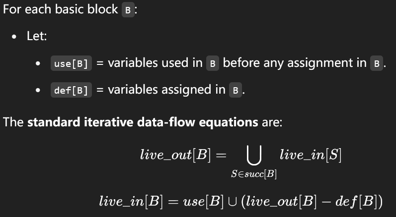
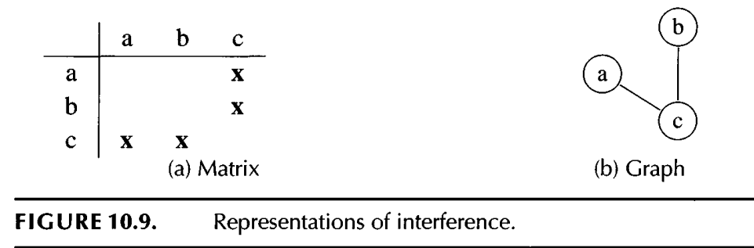

The front end of the compiler translates programs into an intermediate language with an unbounded number of temporaries. This program must run on a machine with a bounded number of registers. Two temporaries a and b can fit into the same register, if a and b are never “in use” at the same time. Thus, many temporaries can fit in few registers; if they don’t all fit, the excess temporaries can be kept in memory.
Therefore, the compiler needs to analyze the intermediate-representation program to determine which temporaries are in use at the same time. We say a variable is live if it holds a value that may be needed in the future, so this analysis is called liveness analysis.
Live-in: A variable v is live-in at a program point p if v is used (not defined) at current point or later point.
A variable v is live-out at a program point p if is live in the later point of v

One of the most important applications of liveness analysis is for register allocation: we have a set of temporaries a,b,c,… that must be allocated to registers r1,…, rk. A condition that prevents a and b being allocated to the same register is called an interference
The most common kind of interference is caused by overlapping live ranges: when a and b are both live at the same program point, then they cannot be put in the same register.
If a and b has inference, we can add an edge between them to mark, they can not appear at the same time. The following is an example:

After the instruction selection, we get a list of assembly code with inifinite registers.
The flow analysis for the Tiger compiler is done in two stages: first, the control flow of the Ass em program is analyzed, producing a control-flow graph; then, the liveness of variables in the control-flow graph is analyzed, producing an interference graph
Each instruction (or basic block) is represented by a node in the flow graph. If instruction m can be followed by instruction n (either by a jump or by falling through), then there will be an edge (m, n) in the graph.
The makegraph.sml defines how the flow graph is made according to the assembly. The graph will also note the reg used in current node and the defined in current node to help build the interference graph.
liveness.sml takes a flowgraph and return an IGraph and a table mapping each flowgraph node to the liveout set of temps. (the interference reg are those in the live-out set)